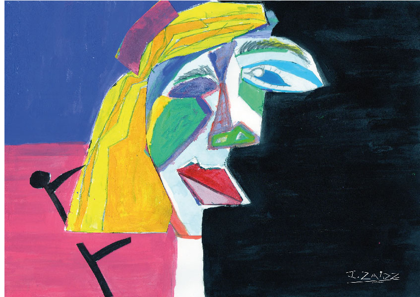
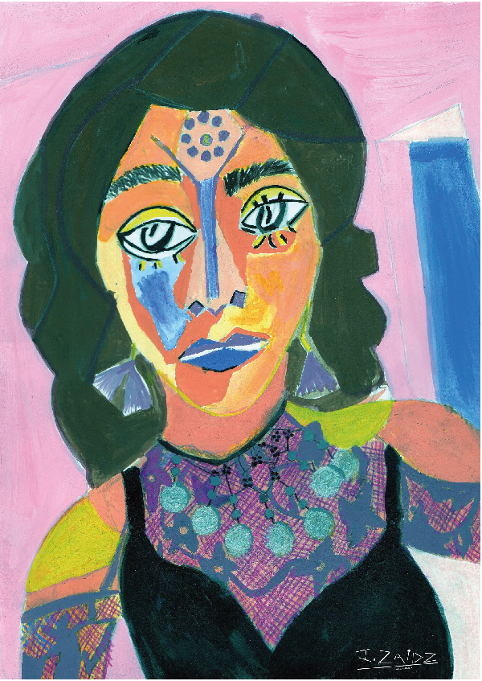
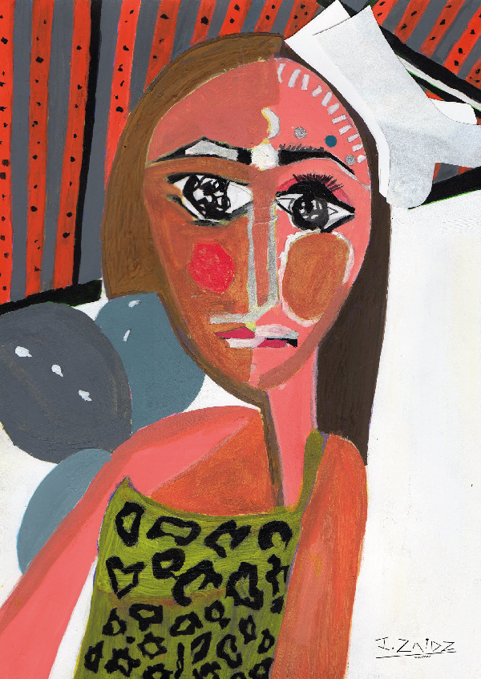
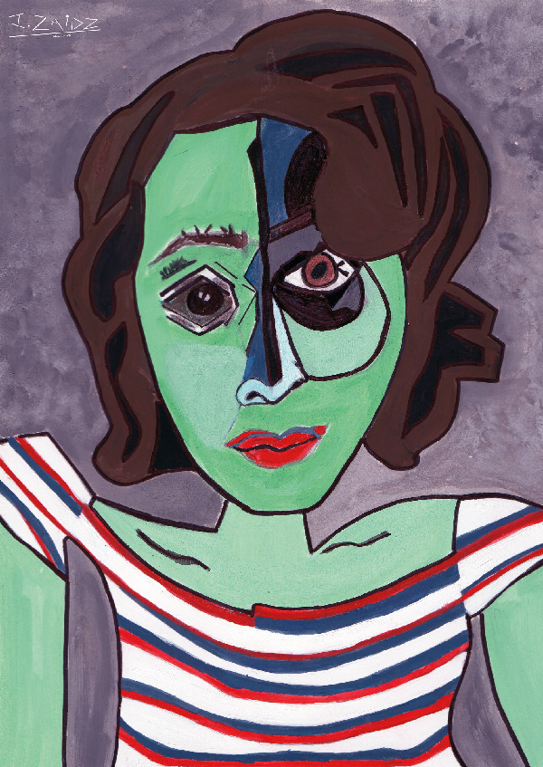
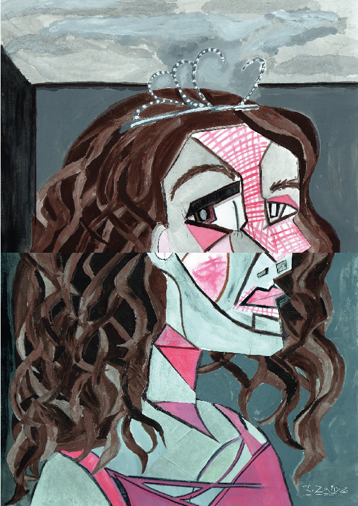
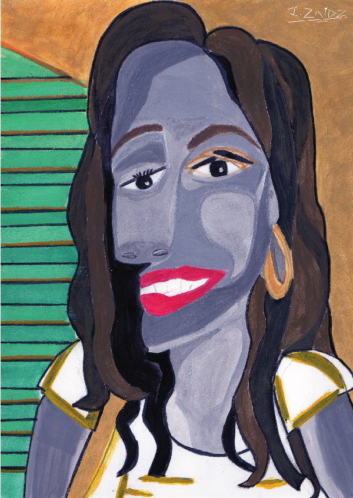
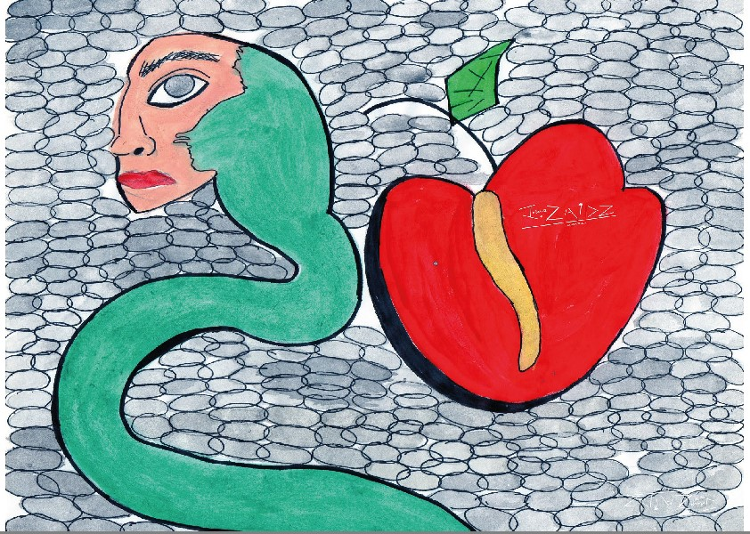
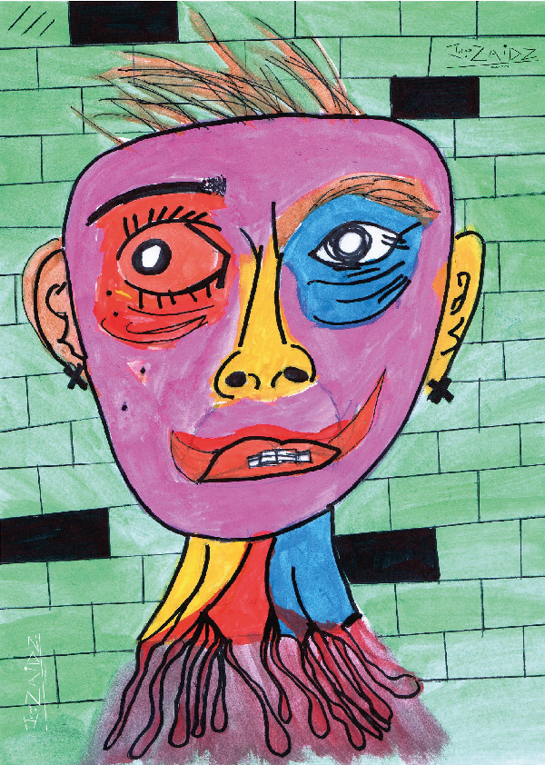

Irina Zaidz
Obras
Serie Piczaidzsso (2020) (Más información)
Piczaidzsso (2020) (Más información)
Bailirina Árabe (2020) (Más información)
Carnaval Primitivo (2020) (Más información)
Franqueada Rayada (2020) (Más información)
Princesa Ciruela (2020) (Más información)
Sol Saliene (2020) (Más información)
Serie Autoretratos feos (Más información)
Zombansiedad (2020) (Más información)
Gusanamor (2020) (Más información)
Agidicción (2020) (Más información)
Sobre el artista
Irina Zaidz es una mujer originaria de la ciudad de Puebla México, quien a los 20 años descubrió el arte como medio de expresión y curación para su propio ser.
En el año 2019 creo su propia corriente artística a la que título Pinturaspitualidad “la rareza expresada a través de la pintura”, dejando atrás la represión de sus sentimientos, transformando el dolor en arte, en su arte. Cada obra es un estado anímico, es un diario que representa lo que en su momento fue.
Las obras seleccionadas son tomadas de diferentes facetas que ha tenido como artista, sin embargo ha pintado y dibujado muchas otras cosas, las cuales se encuentran en su blog Pinturaspitualidad.blogspot y en su Instagram @pinturaspitualidad_
Publico su primer libro a través de la plataforma lektu en marzo 2021, el cual contiene sus primeros dibujos hechos en 2019 acompañados de poemas, y dentro de unos días publicara otro que contiene sus primeras acuarelas hechas en 2019.
Serie piczaidzssos
Obras inspiradas en Pablo Picasso, en las que Irina Zaidz hace una combinación de su arte con la del pintor.
Se toman elementos de los cuadros que Picasso pinto de sus mujeres, esto debido a las emociones que aquellos retratos le generaron a la artista, siendo algo único en el mundo para ella.
Para realizarlos Zaidz se inspiró en cuadros que retratan a Jacqueline Roque, Dora Maar y Marie Therese Walter (musas de picasso).
Cuando Irina comenzó en este mundo del arte no tenia de referente a ningún pintor, pero fue hasta el 2020 que vio con detalle la obra "la mujer que llora" de Picasso que quedo fascinada con las emociones que dicho cuadro plasmaba, lo que provoco que se hiciera adicta a admirar cuadros de estas musas, queriendo dibujarse en esas formas, haciendo sus propios Picassos, combinándolo con su arte siendo el resultado “Piczaidzssos”
Dicho esto se toman elementos de esos cuadros como ojos, labios, cejas, etc para posteriormente combinarlos con las propias formas faciales de la artista y con su imaginación en cuanto a colores.
Actualmente Picasso es el pintor que Irina Zaidz más admira en este mundo por lo que haber realizado esta serie de pinturas es algo que la llena en su camino artístico.
Este es el primer cuadro inspirado en Picasso, es una experimentación, se toman elementos únicamente de Marie Therese Walter, como: el cabello corto, la boina y el fondo.
Es una pintura que no retrata a nadie, pero que hizo que Irina Zaidz pudiera reconocer elementos que se repetían en los retratos de Marie Therese, tales como el fondo de pared, las boinas, los sombreros y las sillas.
Los colores que se utilizaron en el fondo de Piczaidsso son brillantes pero oscuros, esto para resaltar la luz que hay en el rostro.
Bailirina Árabe
Esta pintura está inspirada en la faceta de Irina Zaidz como bailarina de danza árabe, Zaidz se basó en una fotografía que se tomó en su primera presentación de danza, combinándola con elementos de un retrato de Dora Maar y Jacqueline Roque.
Los elementos que se tomaron del retrato de Dora Maar fueron: el diseño de los ojos y el diseño de la estructura en el color de la boca. Mientras que el elemento inspirado en el retrato de Jacqueline Roque fue: La nariz
Si bien esas piezas se tomaron y se modificaron un poco conforme a los rasgos de la autora y conforme a la danza árabe, la cual se ve plasmada en el traje, y el maquillaje.
Franqueada Rayada (2020)
Esta obra está inspirada en Jacqueline Roque, toma elementos como: los ojos y las cejas.
Zaidz los conjunta con sus propios rasgos, retratando una fotografía de ella misma vestida con una blusa de rayas, trasforma sus rasgos con las formas del retrato de Roque.
Este retrato es muy liviano, muestra a una mujer relajada. Si bien la intención de inspirarse en una musa distinta es que cada una contiene formas únicas, las cuales se quisieron tomar y transformar, en este caso Jaqueline Roque se mostraba muy relajada, por lo que se quiso tomar esa esencia, mostrando igual una Irina relajada.
Princesa Ciruela (2020)
Esta pintura se basa en una fotografía de Irina Zaidz vestida de bailarina de ballet , y está inspirada en los retratos de Maria Therese Walter y en el Cascanueces.
Se toman elementos que Picasso retrato de Maria Therese, como las rayas en la cara, el objeto en la cabeza, los contornos del rostro, la resaltacion en color de parpados y mejillas, y el color claro de la piel para dejar resaltar los elementos característicos.
En Princesa Ciruela el cabello tomó un café claro y oscuro para dar volumen, en el pecho se hizo un rompecabezas de figuras geométricas que al igual que los retratos de Walter, es la ropa.
Si bien los rasgos de la artista mantienen su esencia: la mirada, el mentón, la nariz, etc. Este fue el Piczaidsso mas tardado en realizar.
Sol saliente (2020)
Esta obra está basada en una fotografía cotidiana de Irina Zaidz, donde se resalta su sonrisa, y su cabello.
La artista se inspiró en un retrato de Dora Maar, tomando elementos como: la forma de los ojos, nariz, cabello y perfil, para transfórmalos de acuerdo a su cara.
Los retratos que hacia Picasso eran realizados siempre en habitaciones, por lo que de fondo siempre hay una pared en color suave, en este caso se dibujó un sol que suelta rayos, pues a pesar de la seriedad de la pintura de Maar, Irina quiso retratarse sonriente y con colores más cálidos, naciendo así Sol Saliente.
Serie autoretratos feos
Este serie de pinturas simbolizan la ansiedad por la que paso Irina Zaidz en el mes de septiembre 2020, a causa de la dependencia que sufría.
Los tres retratos representan el interior del artista, los colores utilizados son alegres, pues esta corriente "Pinturaspitualidad" consiste en plasmar emociones en colores vivos y vibrantes, por más que estas sean negativas.
El color negro es fundamental para resaltar los contornos y los fondos que son figuras que se repiten, esto para dar protagonismo a los rostros.
Zombansiedad (2020)
Es un autorretrato en el que la artista se sentía como un muerto viviente y veía su fealdad frente al espejo. Zaidz hizo el boceto copiando lo que el espejo le reflejaba.
"Me encontraba sola mi espejo mostraba a una mujer horrible, no tenía inspiración ya, así que me mire y empecé a plasmar la fealdad que había frente a mí. El color rojo es la sangre que representa muerte, el color amarillo es la carne que aún sigue viva. Me sentía como zombie a raíz de que no tenía un hombre a mi lado. Acababa de terminar una relación y no había otro calmante para mi ansiedad"
Zombansiedad es solo el retrato de como una persona se puede sentir muerta en vida.
Gusanamor (2020)
En este dibujo la artista acepta su dependencia emocional hacia los hombres, retratándose en forma de gusana, la cual está a lado de una manzana que simboliza el amor del cual se busca alimentar como un gusano lo hace de esta fruta.
"He aceptado mi dependencia al fin y sé que soy una gusana que clama afecto, mi cara está en el gusano y la manzana representa el corazón rojo que es el amor"
Gusanamor podría igual representar el pecado de mis actos, los cuales me hicieron sufrir.
Agidicción (2020)
En este otro autorretrato Zaidz, plasma lo agitada que esta por no tener lo que la hace sentir bien, mostrándose como una mujer a su percepción, horrible, destruida, calva, y avejentada, la cual sangra de tanto nudo en la garganta
"Otro retrato del mismo día, donde veía fealdad, donde mi belleza había desaparecido, así me llegue a sentir, horrible muy horrible”.